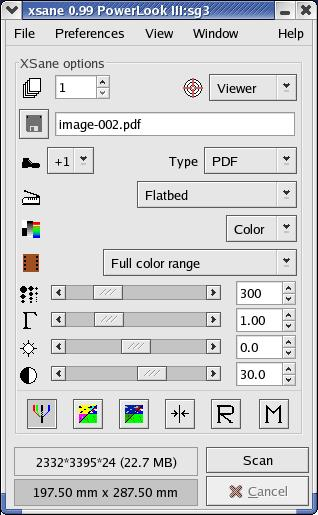
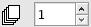

Index
XSane mode:

Scan options
Medium selection
Color management
Color correction:
Standard options window
Advanced options window
Preview:
Batch scan:
Setup:
|
Here you find a description of the available scan options in the XSane main window.
If an option is available depends on the scanner model, available hardware extensions,
the scanmode and the xsane mode.


ADF-Pages:
Select the number of pages that shall be scanned.
You can use this with an automatic document feeder (ADF)
or by changing the papers by hand while the scanhead moves back.
Scansource:
Select scansource, e.g.: Flatbed, Transparency, Automatic Document Feeder.
Scanmode:
Select scanmode, e.g.: color, grayscale, halftone, lineart.
Medium selection:
Select scanmedium, e.g.: slide, standard negative,
Agfa negative, ... or Full range.
Scan resolution:
Select resolution that is used for scanning. If the backends makes available a
range of resolutions (e.g. 100-600 dpi) XSane can display a slider or a
list of resolutions. You select this via Preferences/Show resolution list.
The backend can define a list of resolutions insted of a range, in this
case it is not possible to enable the slider.
To select exact resolutions with the slider click the slider with the mouse pointer
and use the cursor keys to change the value in small steps, if you press ctrl
and a cursor key the resolution is changed in larger steps.
|